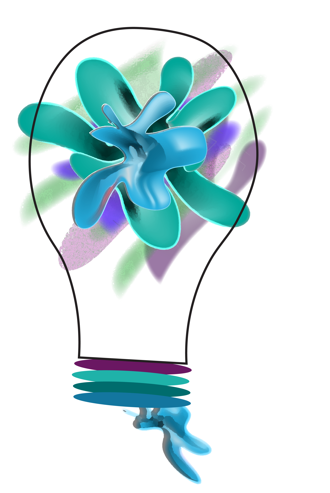

Planning in any aspect can be beneficial! If you make a plan and schedule, ou are more likely to succeed in your self-care journey.

How to plan, so you can benefit most from self-care exploration and activities:
- Get out a pen and paper and write down an area you would most like to work on
- Write down two ideas you have that you can focus on. Do a google search and see if there are other ideas more suited to you
- Commit to your two ideas
- Find at least two days/times a week for a month that you can follow through with your commitment. Put it in your calendar and ensure you set aside that time. No excuses
- Start a diary or journal
- At the end of each experience, or each week, write about your experience